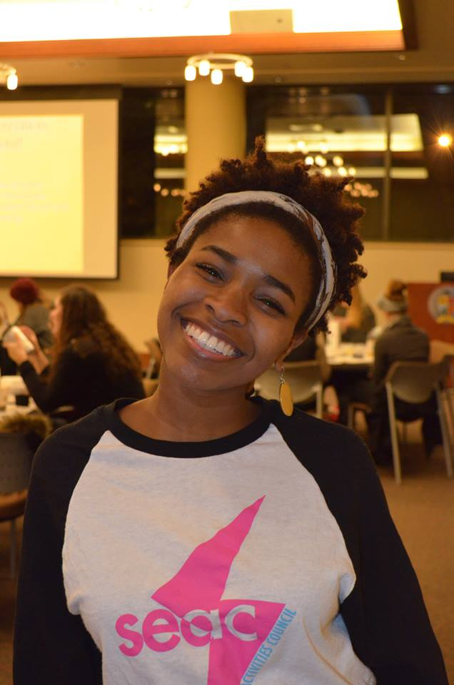

This page is so unfinished!!!!!!!
Afina is a designer, visual artist, and writer based in Seattle, WA. Her work is mostly concerned with beautiful aesthetics.
Afina is currently pursuing her Bachelor of Arts degree in Digital Design. Her design program emphasizes the importance of artistic exploration within the field of graphic design. Perfect for Afina, who has an interest in a myriad of subjects both within and without the visual arts. (Examples include Judaism, meditation, productivity methods, fashion. She hopes to make her living making images (visual art), marrying text and image (graphic design), and by synthesizing thought (writing).
Download her resume here